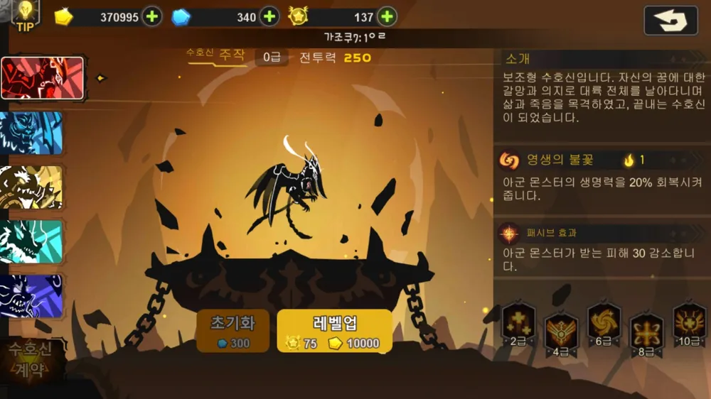
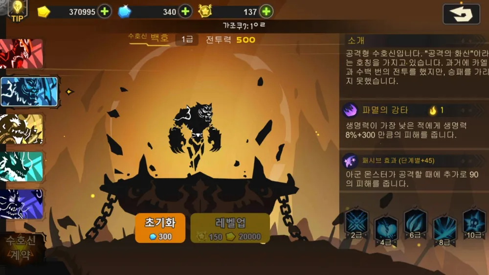
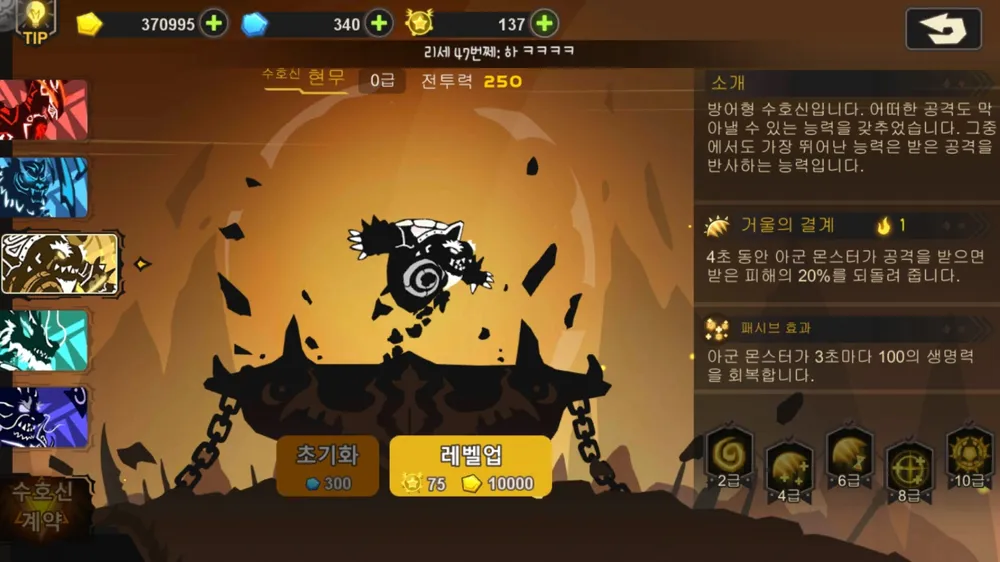
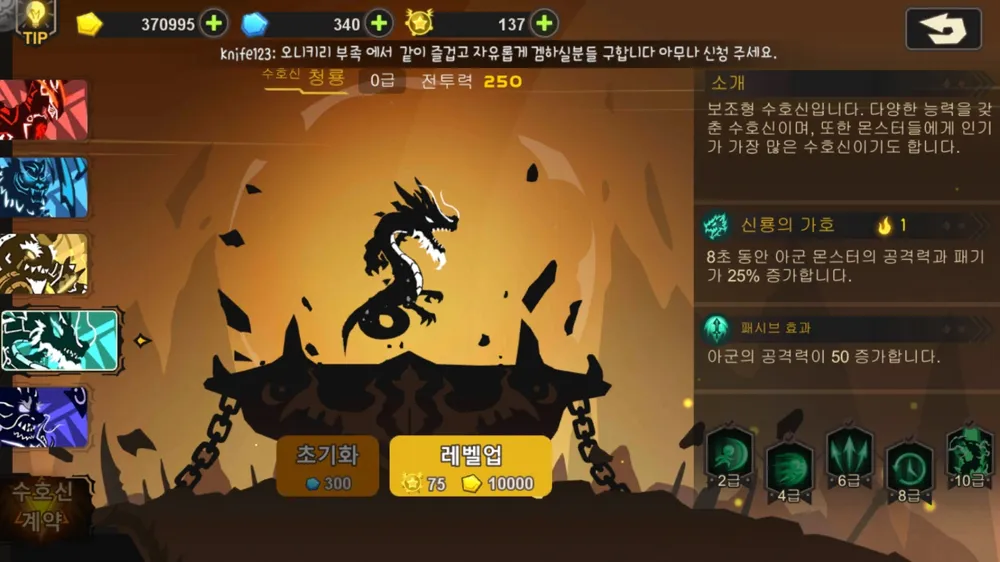
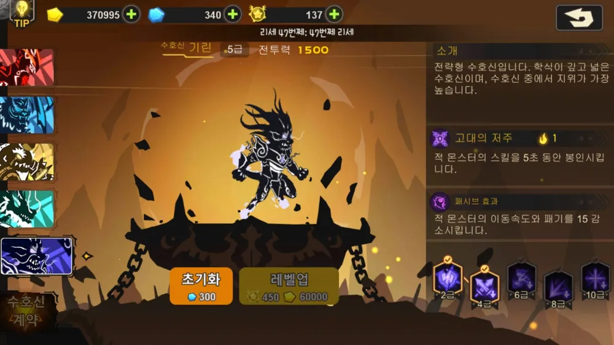
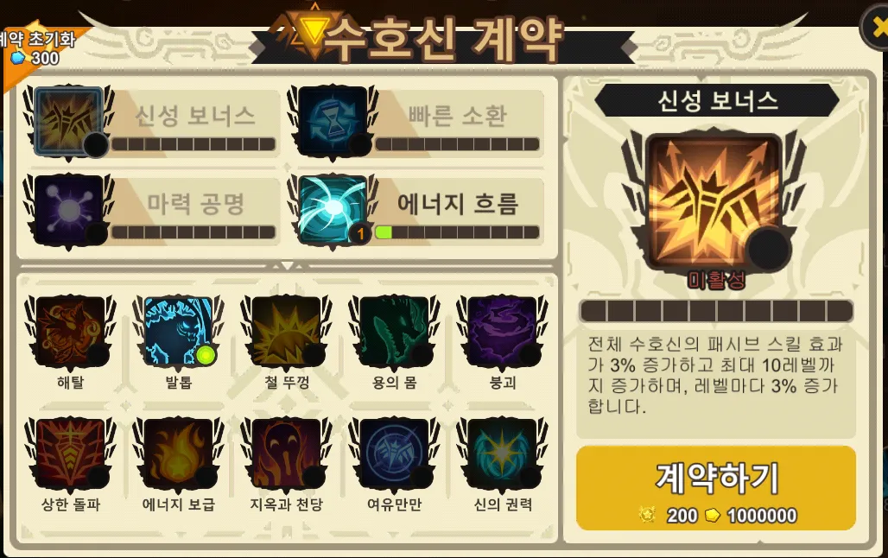

수호신 가이드
전투 중 직접 발동할 수 있는 유일한 조작 요소. 타이밍 하나로 승패가 갈리는, 슈진스의 진짜 '컨트롤'입니다.
작동 원리
수호신은 모두 5종(주작 · 백호 · 현무 · 청룡 · 기린). 각각 패시브 효과를 가지며, 발동 시 액티브 효과로 추가 능력을 냅니다. 액티브는 게이지를 소모하는데, 최초 1칸 → 발동할 때마다 1칸씩 늘어 최대 3칸까지 증가합니다. 액티브 후 약 3초의 글로벌 쿨타임이 있고, 패시브는 다른 수호신을 쓰기 전까지 유지됩니다.
- 수호신은 캐릭터 레벨업마다 순서대로 개방되고, 1급을 올릴 때마다 신성포자를 소모합니다.
- 각 수호신은 2 · 4 · 6 · 8 · 10급에서 효과가 강화됩니다.
- 올린 수호신 레벨은 300젬으로 초기화해 자원을 돌려받을 수 있습니다.
- 자동 플레이 시 설정한 수호신이 조건 충족마다 자동 사용됩니다. 단 주작은 예외로, 체력이 일정 % 이하로 떨어질 때 발동합니다.

주작 회복 · 보조
수비형 수호신. 죽어가는 아군을 살리는 회복기로, 초반 지역 돌파는 물론 중·후반 공략에서도 액티브 타이밍을 잘 맞추면 캐리를 만들어 냅니다.
| 등급 | 효과 |
|---|---|
| 2급 | 영생의 불꽃이 9초 동안 3초마다 아군 생명력 2% 회복 |
| 4급 | 5초간 아군이 받는 피해 15% 감소 |
| 6급 | 영생의 불꽃 회복량 25%로 증가 |
| 8급 | 생명력이 가장 낮은 아군에게 추가 15% 회복 |
| 10급 | 3초간 아군이 사망하지 않음 |
계약 〈해탈〉 · 회복으로 오버되는 회복량이 보호막으로 변환(중첩 불가).

백호 공격
공격형. 체력 낮은 적을 치유 전에 끊거나, 체력 높은 탱커를 %피해로 빠르게 깎습니다. 고정 수치는 미미하나 적 생명력을 %로 깎는 점, 그리고 4급의 치유 95% 감소가 강력합니다.
| 등급 | 효과 |
|---|---|
| 2급 | 파멸의 강타 +100, 5초간 매초 적 생명력 2% 감소 |
| 4급 | 강타 +300, 10초간 적이 받는 치유 95% 감소 |
| 6급 | 강타 +500, 적을 아군 방향으로 끌어당김 |
| 8급 | 강타 +700, 백호 디버프 제거 불가 |
| 10급 | 강타 +900, 모든 아군 공격력 25% 증가 |
계약 〈발톱〉 · 에너지 소모 최대치가 2로 고정되고 강타 피해 +1000.

현무 방어 · 반사
방어형. 다용도는 아니지만 전략 가치가 큽니다. PvP에서 디버프 제거로 상대 기린을 카운터치거나, 아군 디버프를 칼같이 지우며 반사딜로 역전을 노립니다. 다만 디버프 제거는 2급 강화 필수.
| 등급 | 효과 |
|---|---|
| 2급 | 거울의 결계가 2초마다 아군 모든 디버프 제거 |
| 4급 | 지속 동안 아군이 1번 공격받을 때마다 0.3% 체력 회복 |
| 6급 | 아군이 공격받을 때마다 결계 지속시간 0.2초 증가 |
| 8급 | 지속 동안 아군 치유 효과 30% 증가 |
| 10급 | 반사 피해량 25% 증가 |
계약 〈철 뚜껑〉 · 반사 결계 지속시간 +1초.

청룡 공격 보조
전체 아군의 딜을 끌어올리는 보조형 공격 수호신. 미는 덱에서 주로 채용되며, 초반 기린에서 청룡으로 갈아타는 경우가 많습니다. 10급이 되면 딜이 곧 힐이 되어 생존력이 크게 보장됩니다.
| 등급 | 효과 |
|---|---|
| 2급 | 지속 동안 아군이 밀쳐지는 거리 20% 감소 |
| 4급 | 지속 동안 아군 이동속도 20% 증가 |
| 6급 | 신룡의 가호 효과 35% 상승 |
| 8급 | 가호 지속시간 35% 증가 |
| 10급 | 지속 동안 아군이 준 피해의 35%만큼 생명력 회복 |
계약 〈용의 몸〉 · 소환 시 에너지 2개 이상 소모하면 원거리 공격력 35%, 근접 패기 35% 증가.

기린 디버프 보조
초반 유저들의 수호천사. 적 스킬을 묻지도 따지지도 않고 5초 봉인해 공·수 모두에서 우위를 줍니다. 범용성이 압도적이라 끝까지 잊혀지지 않지만, 신성 룬이나 현무 2급으로 디버프가 해제될 수 있다는 점이 약점입니다.
| 등급 | 효과 |
|---|---|
| 2급 | 고대의 저주 지속 동안 적이 받는 피해 25% 증가 |
| 4급 | 지속 동안 적 공격력 25% 감소 |
| 6급 | 지속 동안 적 이동속도 20% 감소 |
| 8급 | 지속 동안 적 패기 20% 감소 |
| 10급 | 지속 동안 적이 받는 치유 효과 60% 감소 |
계약 〈붕괴〉 · Lv6 이동속도 감소가 45%로 증가하고 Lv6은 제거 불가.
수호신 계약
캐릭터 레벨 55부터 열리는 기능. 수호신의 성능뿐 아니라 주요 기능 자체를 강화합니다. 효과가 거의 다 유용해서, 메인으로 쓰는 수호신이라면 사실상 필수 강화입니다. 다만 골드와 신성포자를 많이 쏟아부어야 한다는 점이 함정.

다음 단계: 룬 · 유전자 변이로 몬스터 개별 스탯을 다듬어 보세요.